Version 3.5.1
Au menu
Présentation
Installation
Configuration
Sécurisation
Gestion des droits
MedWebTux pour MedinTux (initialement
diffusé sous le nom de MedinPHP, puis
MedinWeb) est un programme destiné à
permettre de travailler avec les données de MedinTux à partir d'un ordinateur non équipé
du programme, mais d'un simple navigateur.
Dans certains cas, MedWebTux peut fonctionner en tant que programme
autonome.
Cela nécessite de disposer d'une base de données MySQL, et d'un serveur Apache équipé du module PHP (les instructions d'installation de cette
structure ne font pas partie de cette documentation).
Cette machine serveur peut être aussi bien sous Windows que sous Linux ou
MacOS X.
Pour information, on trouve facilement en téléchargement l'ensemble EasyPHP, qui
installe automatiquement MySQL, Apache et son module PHP pour Windows.
Une fois Apache correctement installé et démarré, une adresse comme
http://localhost (tapée dans le navigateur de la machine locale) doit renvoyer
un message de satisfaction.
Cette version nécessite une base de données compatible avec MedinTux
>=1.26. (2.14 comprise)
L'ensemble des fichiers contenus dans ce répertoire doivent être copiés
dans le « DocumentRoot » du serveur
Apache, c'est-à-dire là où se trouvent
les fichiers qui seront lus par le navigateur du client.
Si vous ne savez pas où est le
DocumentRoot sur
votre machine :
Sous MacOS, il faut activer le serveur apache (pref systeme>partage>partage web), placer le dossier MedWebTux dans le dossier site (user>sites)
Si la commande http://localhost/MedWebTux ne fonctionne pas alors que http://localhost fonctionne, c'est que vous n'avez pas installé le module php-mysql sous Linux.
Afin d'effectuer des tests plus poussés, un fichier test.php est fourni :
en faisant http://localhost/test.php, vous devriez voir une première ligne en
html et une deuxième en php. Si la deuxième s'affiche, c'est que le module
php est bien installé. Si ce test fonctionne mais que la page index.php
n'affiche rien, c'est peut-être que le module php-mysql n'est pas activé.
Dans le php.ini, il faut décommenter les lignes
extension=php_mysqli.dll et
"extension=php_mysql.dll.
 ConfigurationModifiez le fichier config.phpet le fichiertemplate.phpselon votre configuration.
ConfigurationModifiez le fichier config.phpet le fichiertemplate.phpselon votre configuration.
 Sécurisation
Sécurisation
En dehors des habituels login/mot de passe (éviter le prénom des
enfants et de le coller sous le clavier !), il est possible de crypter les
échanges entre le client et le serveur par SSL.
En effet, sur un réseau informatique, tout ordinateur connecté au réseau
(avec ou sans fil) peut capter les échanges entre les autres ordinateurs.
Pour éviter cela, il faut pratiquer un brouillage entre client et serveur.
Il n'y a aucune modification à faire au niveau du programme : tout se passe au
niveau du serveur.
Mode d'emploi résumé de
SSL
ou
DocumentRoot "/var/www/html"
SSLCertificateKeyFile /etc/httpd/server.key
chown apache server.*
Gestion
des droits
MedWebTux possède une gestion de base des utilisateurs et de leurs
droits.
 Types de
droits
Types de
droits
Chaque utilisateur a un certain nombre de types de droits : créer des
dossiers, lire les consultations, imprimer les ordonnances, etc. Cela
s'applique globalement à tout le programme.
Par exemple, un utilisateur non autorisé à créer des dossiers dans MedinTux
ne pourra pas non plus en créer dans MedWebTux.
Utilisateurs délégués
Alors que les dossiers n'appartiennent à personne, les
observations,ordonnances, consultations, etc. appartiennent à leur auteur.
Afin d'en permettre le partage, chaque utilisateur peut déléguer d'autres
utilisateurs à accéder à ses données privées. Par exemple, il est possible
d'autoriser un autre médecin à
lire nos consultations, mais pas de les modifier ou une secrétaire à écrire
des rendez-vous mais pas à lire les observations.
 Utilisation
Utilisation
Que taper dans votre navigateur
?
Vous pouvez entrer dans le programme en lançant dans votre navigateur l'adresse IP
ou le nom de l'ordinateur sur lequel est installé le systèmeApache + MySQL + PHP.
Exemple :http://1.2.3.4 ou http://1.2.3.4/MedWebTux.
La page index.php vous
permet de donner un nom et un mot de passe. Il s'agit des identifiants d'un
utilisateur référencé comme utilisateur de MedinTux.
Une fois connecté, une session est établie, et vous
pouvez atteindre n'importe quelle page depuis la page de connexion ou,
directement, en tapant en URL http://1.2.3.4/(MedWebTux/)agenda.php(ou liste.phpou correspondant.php).
Si vous tentez de lancer n'importe quelle page sans être connecté, vous
serez redirigé automatiquement sur la page de connexion. Toutes les pages
donnent accès à la page de déconnexion.
Pour se connecter, il n'y a pas besoin d'activer les cookies.
Le mécanisme de session utilisé déconnecte automatiquement au bout d'"un
certain temps" (selon les réglages du serveur).
L'agenda est multiutilisateur. Cela signifie que chaque utilisateur a son
propre agenda, et qu'il y accède automatiquement lorsqu'il est connecté au
système. Du fait de l'existence de droits délégués, chaque utilisateur peut
autoriser d'autres utilisateurs à modifier et/ou lire son carnet de
rendez-vous (droit agc etagv de MedinTux).
Lorsqu'un utilisateur autorisé lancera l'agenda, il arrivera sur son carnet de
rendez-vous, mais il se verra proposer une liste d'autres agendas. Un simple
clic sur le nom de l'utilisateur voulu dans la liste déroulante effectuera le
changement d'agenda, mais l'utilisateur d'origine restera identifié comme tel
au niveau de l'auteur du rendez-vous.
Lorsque l'utilisateur ira dans une autre page du programme, l'agenda n'oubliera
pas l'utilisateur dont il est délégué.
Lorsqu'on voudra créer un rendez-vous en provenant d'une fiche de patient,
l'agenda sera positionné par défaut sur l'utilisateur autorisé.
L'agenda vous donne la liste des rendez-vous qui
ont été pris à partir de MedinTux pour le médecin qui est connecté. Il est
possible de faire une recherche par période combinée à une recherche par nom
ou prénom, à une recherche par type de rendez-vous et à une recherche par
statut.
La page de l'agenda démarre avec les dates de début et de fin de recherche
renseignées avec la date du jour courant, ce qui affiche les rendez-vous du
jour courant. Pour trouver les rendez-vous pour
d'autres jours, changez les valeurs au moyen des calendriers, ou dans la zone
d'édition, en faisant attention de respecter la syntaxe de format proposé.
Si vous donnez une date de fin antérieure à la date de début, la date de fin
est automatiquement changée pour être identique à la date du début.
La coche Correspondance exacte permet
d'exclure les noms qui ne font que contenir que la clé de recherche, mais pas
le nom entier.
Par exemple, une recherche sur "Tar" trouvera "Tartempion" si la coche n'est
pas validée.
Les dates de recherche se positionnent sur la date courante au lancement, et se
modifient automatiquement lorsqu'une date est fournie par un autre biais
(création de rendez-vous), afin de toujours montrer le rendez-vous qui vient
d'être pris et les places disponibles.
Pour donner une date, vous pouvez l'écrire directement dans la zone de saisie,
selon un format correspondant donné dans le config.php :
Soit jj-mm-aaaa pour le réglage français
Soit mm-jj-aaaa pour le réglage anglais
Soit aaaa-mm-jj pour n'importe que autre réglage de la variable
$date_format.
Si votre navigateur dispose de javascript et que vous voulez bénéficier d'un
vrai calendrier pour faciliter les saisies, cliquez sur l'icône de calendrier
située à côté de la zone de saisie.
Vous verrez alors surgir un calendrier, dans lequel il vous suffira de choisir
la date.
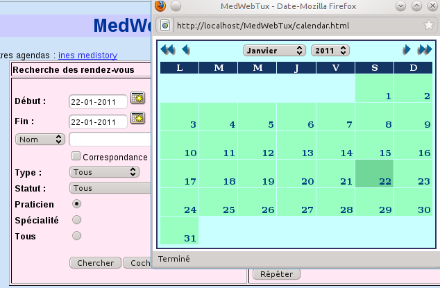
Recherche de rendez-vous par
spécialité
Une liste de boutons-radio permet de choisir la recherche pour le praticien
seul (par défaut), tous les praticiens de sa spécialité ou tous les
praticiens.
Pour choisir pour une autre spécialité, il faut se positionner sur un compte
de cette spécialité.
C'est pratique pour trouver le prochain rendez-vous disponible sans tenir
compte du praticien.
Une autre manière de choisir une spécialité est de choisir son nom dans le
déroulant des utilisateurs.
Cette méthode positionnera le premier utilisateur de la spécialité comme
utilisateur par défaut.

Recherche par type ou par statut
Les filtres de recherche peuvent se combiner aux autres critères (dates,
praticien, nom...) afin d'affiner le résultat.
Exemple : si vous avez créé préalablement des rendez-vous vides de statut
"non attribué", vous pouvez facilement trouver les prochains rendez-vous non
attribués.
Recherche par patient
Il existe un bouton d'historique des rendez-vous dans la fiche
patient.

Cette zone permet de créer un rendez-vous depuis la fiche patient, mais aussi
de lancer une recherche de rendez-vous existants
pour ce patient grâce à une fenêtre fille :

Bouton Cocher
Il a exactement la même fonction que le bouton Chercher, à part qu'il ajoute des cases à
cocher aux résultats de recherche
et retire les boutons Modifier et Annuler .
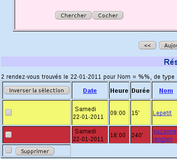
La fonction essentielle de ce mode est d'annuler une erreur, particulièrement
lors de la création de rendez-vous répétés.
On fait une requête sur l'erreur à corriger, on clique sur le bouton Inverser
la sélection, ce qui coche toutes les cases (il reste possible de cocher ou
décocher manuellement selon les besoins), on coche la dernière case à côté
du bouton Supprimer et on valideSupprimer. La coche sert de confirmation. Faites
bien attention, car il n'y aura pas d'autre demande de confirmation.
Liste des résultats
Un clic sur le lien du nom d'un patient amène sur la fiche patient, où se
trouvent l'identité et la liste des contacts (consultations).
Si le patient n'est pas enregistré avec son numéro de dossier dans l'agenda,
un clic sur son nom amène en mode recherche avec le nom fourni déjà
renseigné. Si la recherche n'a rien donné, un
clic sur le bouton Nouveau amène en mode
création de fiche, avec le formulaire prérempli.
En cliquant sur les dates des rendez-vous, on arrive à l'acte médical
référencé.
En cliquant sur les têtes de colonne, on peut forcer le tri par date ou par
nom (date par défaut).
Les résultats de recherche sont accompagnés de deux boutons<< et >>. Un clic sur la double flèche vers la
gauche envoie à la journée précédant la première journée recherchée, et
un clic sur le
bouton droit envoie sur la première journée suivant la dernière journée
recherchée. Un clic sur le bouton Aujourd'hui positionne toutes les variables à
la date du jour et affiche les rendez-vous du
jour.
La coloration des types de rendez-vous est reprise dans MedinTux. On ne peut
pas créer ou supprimer un type de rendez-vous dans MedWebTux. Il faut passer
par MedinTux ou par un accès aux données
brutes.
La coloration des statuts de rendez-vous est différente de celle du type de
rendez-vous, et permet de visualiser facilement l'état de tous les rendez-vous
affichés.
Cette coloration se règle dans le fichier config.php, en créant des variables
appariées aux variables de types de rendez-vous, correspondant aux variables
présentes dans les réglages de MedinTux.
Exemple :
$status_rdv[0]="Absent";
$color_status["Absent"]='#FFB4A7';
Impression du planning
Lorsque vous avez affiché un tableau de rendez-vous, vous pouvez appeler la
fonction d'impression de votre navigateur (par exemple par la combinaison de
touches Ctrl+P). L'impression supprimera tous les contrôles ou zones de
recherche pour n'imprimer que ce qui est utile.
Il est possible d'effectuer toutes les actions sur l'agenda. On peut ainsi créer, modifier ou supprimer un rendez-vous.
La page d'agenda comporte un formulaire de saisie. Il suffit de le remplir
et de cliquer sur Ajouter.
Dans la mesure où il n'y a pas de mécanisme de contrôle de télescopage de
rendez-vous, il est conseillé de créer les rendez-vous en ayant l'agenda du
jour affiché, et de contrôler ensuite l'intégration du nouveau rendez-vous
à une heure compatible avec les autres rendez-vous.
Pour créer un rendez-vous avec un patient qui a déjà une fiche, il est
préférable de choisir ce patient dans le mode liste ou dans sa propre fiche
en donnant le jour désiré, de cliquer sur le bouton
Rendez-vous de la ligne, ce qui relance
l'agenda avec le formulaire prérempli et un affichage des rendez-vous de ce
jour.
Certaines zones (nom, prénom) ne doivent pas être modifiée dans ce cas, car
c'est le numéro de dossier (invisible) qui fait foi. En revanche, vous pouvez
changer la date, mais vous ne pourrez alors contrôler l'absence de
télescopage qu'a posteriori. Cliquez
ensuite sur Ajouter, comme dans le cas
précédent.
Une autre méthode pour créer un rendez-vous à un patient connu sans quitter
l'agenda consiste à cliquer sur le lienChoisir
un patient, qui lance une fenêtre secondaire de choix de patient.

Il suffit de lancer une recherche, puis de cliquer sur le patient désiré pour
qu'il remplisse automatiquement la zone de saisie, de donner les renseignements
complémentaires (heure, date, statut, etc.) puis de valider.
Une astuce gain de temps : le choix d'un type de rendez-vous positionne
automatiquement la durée du rendez-vous selon les réglages présents dans la
base de données.
En cliquant sur le bouton Modifier qui
se trouve sur la ligne d'un rendez-vous, le formulaire de saisie de rendez-vous
se préremplit automatiquement. Il ne vous reste qu'à préciser l'heure, le
type ou le statut de rendez-vous.
Ensuite, cliquez sur le bouton Modifier du
formulaire, pour mettre à jour le rendez-vous préexistant.
Il est possible de changer de patient en cliquant sur "Choisir un patient",
comme dans le cas de la création de rendez-vous.
Lorsque le rendez-vous est lié à une fiche du fichier patient, il ne faut pas
modifier seulement le nom et le prénom, car seul le numéro de dossier fait
foi pour la liaison au dossier.
Une utilisation possible du mode modification est de créer (automatiquement de
préférence) des rendez-vous vides de statut non attribué, afin de
matérialiser les plages disponibles, puis de modifier ces rendez-vous vides en
rendez-vous attribués.
De cette manière, la recherche de rendez-vous disponibles est facilitée
(fonction rechercher sur nom vide et statut "non
attribué").
De même, un rendez-vous annulé peut être modifié en statut
"Annulé" plutôt que supprimé, afin de conserver
l'historique.
Lorsque l'on modifie un rendez-vous vide de statut "Non attribué", la seule
saisie du nom le positionne automatiquement en "non
défini".
Gestion des conflits de modification
Toute fiche qui passe en mode modification se signale par un verrou. Ce verrou
est retiré lors de la validation de la modification (mais pas lors de la
création d'un nouveau rendez-vous à partir du modèle).
Lorsque vous tentez de passer une fiche de rendez-vous en mode Modification, si
un verrou existe, vous obtenez un avertissement.

Si vous êtes certain que ce verrou n'a pas de raison d'être (rendez-vous
ouvert en modification, puis refermé sans validation, par exemple),
Il vous suffit de cliquer sur Modifier
comme prévu pour valider votre modification et retirer le verrou (si
une autre modification était en cours sur le même rendez-vous, le dernier à
valider écrasera tous les autres).
Si vous cliquez sur Ajouter, le problème
ne se pose pas, l'autre utilisateur pouvant continuer à utiliser la fiche en
modification.
Pour supprimer un rendez-vous, il suffit de cliquer sur le bouton Annuler. Cela crée automatiquement un nouveau
rendez-vous vierge de mêmes caractéristiques et de statut "non attribué",
tout en changeant le statut du rendez-vous courant à "Annulé".
Pour une suppression définitive d'un rendez-vous, passez par le mode Cocher de la zone de recherche.
Création de rendez-vous en série
Vous disposez d'un bouton qui permet de créer un grand nombre de rendez-vous
en quelques clics.
Cette fonction a deux buts :
-soit de répéter un rendez-vous pour une personne précise (comme une séance
de kiné tout les lundis à 14 heures pendant 3 mois),
-soit de créer une sorte de planning en créant des rendez-vous vides, de type
non attribué, durant toutes les plages de présence possibles du praticien.
La personne qui prend les rendez-vous travaillera alors systématiquement en
mode Modification pour attribuer ces
rendez-vous vides à des consultants.
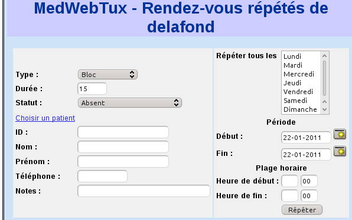
La colonne de gauche représente les caractéristiques du rendez-vous, celle de
droite la manière de le répéter.
Si le rendez-vous doit être répété plusieurs jours de la semaine, il faut
utiliser la combinaison Ctrl+clic ou Maj+clic afin d'effectuer une sélection
multiple.
Il sera créé autant de rendez-vous que possible dans la plage horaire
désignée selon la durée des rendez-vous configurée.
Pour un rendez-vous répété une seule fois par jour, faire attention de
choisir une plage horaire qui début à l'heure du rendez-vous et dont la fin
est inférieure au double de la durée du rendez-vous.
Par exemple, pour un rendez-vous de 1/4 d'heure à 14h, il faut choisir comme
début 14:00 et comme fin une valeur entre 14:15 et 14:29 compris.
Le statut des rendez-vous se positionne automatiquement sur le statut déjà
connu ou, en son absence et en l'absence de nom fourni, sur Non attribué.
S'il existe déjà un rendez-vous de même heure, de même durée et de même
utilisateur, le rendez-vous n'est pas créé.
Le mode Patients permet de trouver un ou
plusieurs patients, en cherchant dans le fichier entier.
Pour choisir un patient, entrez une partie de son nom ou de son prénom, de sa
date de naissance, etc. (selon la liste déroulante) suivi du caractère, ou le
nom exact en cochant la case.
Si vous voulez trouver TOUS les patients du fichier, écrivez juste "%" dans la
zone de saisie et ne cochez pas la case (à éviter si la base contient
beaucoup de patients, car cela peut générer une page HTML
immense).
La recherche ne tient pas compte de la différence majuscule/minuscule, et les
caractères accentués sont assimilés à des caractères non accentués.
La liste des patients trouvés peut être imprimée, en supprimant
automatiquement tous les enrichissements de la page (contrôles, etc.) au moyen
de la fonction d'impression du navigateur.
Un clic sur un nom envoie à sa fiche individuelle.
Un clic sur le bouton Rendez-vous, en
ayant préalablement choisi une date, envoie sur le formulaire de prise
rendez-vous de l'agenda sur le bon jour avec tous les champs possibles
préremplis.
Dans le cas où il existe plusieurs fiches pour un même patient, il existe
un moyen simple de les fusionner en une seule, qui récupère tous les
éléments pertinents.
Pour cela, rendez-vous dans le mode liste en tant qu'administrateur. Vous verrez
un bouton Sélectionner. Entrez une clé
de recherche correspondant aux fiches que vous voulez fusionner (habituellement
deux, mais il n'y a pas de limite). Le résultat de votre recherche s'affichera
avec une case à cocher sur chaque ligne. Cochez les cases désirées, et
validez par Valider. Vous êtes alors
sur une nouvelle page,
sur laquelle vous pourrez choisir item par item ce que vous voulez conserver
(par exemple, le nom d'une fiche, l'adresse d'une autre, etc.).
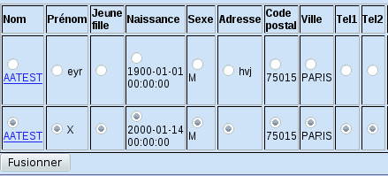
Une fois votre choix fait, validez. Il ne restera plus qu'une fiche,
réunissant les éléments des fiches fusionnées, y compris les observations,
documents, terrains, prescriptions et liaisons aux correspondants.
L'interface classique de MedinTux propose aussi une fusion de fiches, mais sans permettre le choix champ par champ.
Il est possible de créer une nouvelle fiche à partir de rien ou d'une
fiche préexistante, de modifier une fiche existante ou de supprimer une fiche.
Après une recherche infructueuse dans le fichier, un clic sur le bouton Nouveau lance un formulaire de création de
dossier, avec la valeur recherchée préremplie. Il ne reste qu'à remplir les
blancs et valider.
Si le patient existe déjà (nom, prénom et date de naissance identiques), il
ne sera pas créé de nouvelle fiche, mais il y aura redirection automatique
vers la fiche existante.
Le bouton Nouveau peut aussi être
actionné sans rien avoir recherché, directement depuis la page des patients.
Assistance à la saisie
Code postal
Une fois saisi le code postal, un changement de champ ouvre une boîte de
dialogue qui permet de choisir la ville, qui s'écrira automatiquement dans la
zone de saisie Ville.
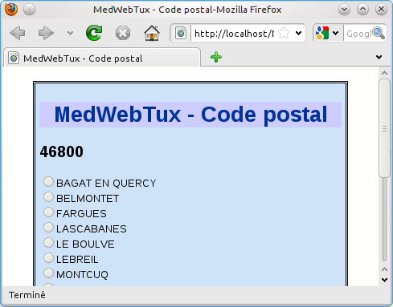
Le mécanisme inverse existe aussi : Ville ->code postal

Titre
De même, le choix Madame/Monsieur/Mademoiselle modifie dynamiquement le sexe
présélectionné.
Clé de numéro de sécurité sociale
La clé du numéro de sécurité sociale se calcule automatiquement à partir
des 13 chiffres : il suffit de changer de champ de saisie pour que la clé
apparaisse dans la bonne zone (nécessite Javascript). Les espaces seront
automatiquement retirés.
Date de naissance
La date de naissance bénéficie d'un calendrier (nécessite Javascript). Il
est impératif de respecter le format de date donné en exemple, comme
jj-mm-aaaa pour le français. Vérifiez le réglage dans config.php (choix
possibles : fr, en, toute autre valeur ou rien positionnant la variable sur
iso, soit aaaa-mm-jj).
Modification de fiche
Pour modifier une fiche, il suffit de cliquer sur le bouton Modifier de la ligne du dossier ou de la fiche
du patient, de faire les modifications désirées dans le formulaire, et de
cliquer sur Modifier dans le
formulaire de modification. Si la fiche est déjà verrouillée, par exemple
par un autre utilisateur, vous aurez un message d'avertissement que vous êtes
libre d'ignorer.
Création de fiche à partir d'une fiche
existante
Pour créer une nouvelle fiche reprenant les données d'une fiche existante
(personne habitant à la même adresse qu'une personne connue, par exemple), il
faut cliquer sur le bouton Modifier de la
ligne de la personne connue ou de la fiche du patient de référence, faire les
modifications nécessaires pour adapter la fiche à la nouvelle personne
(changer le prénom, la date de naissance,
la profession, etc.), puis de cliquer sur Ajouter dans le formulaire de modification. Si
la fiche était verrouillée, vous ne changerez pas son statut par cette
opération.
Enfin, pour supprimer une fiche, il suffit de cliquer sur le bouton Supprimer de sa ligne. Il sera demandé une
confirmation sur la page suivante (droit administrateur seulement).
Importation de fiche
Si vous disposez d'un fichier XML provenant de la fonction d'exportation de
MedinTux d'un autre ordinateur, vous pouvez l'importer facilement depuis le
mode liste, bouton Importer (pensez à
sélectionner auparavant le fichier avec le sélecteur de fichiers).
La fiche est récupérée complètement : identité, documents, notes,etc.
Ne sont pas récupérés : les rendez-vous de l'agenda et la liaison aux intervenants.
Les documents deviennent possession de celui qui a importé les données, l'utilisateur qui les possédait devenant simplement utilisateur délégué sur cet ordinateur.
L'exportation n'est possible que pour les utilisateurs ayant les droits d'administrateurs et l'importation n'est possible que pour les dossiers qui n'existent pas déjà sur l'ordinateur cible (la numérotation GUID est récupérée).
Mode
patient
L'écran
général
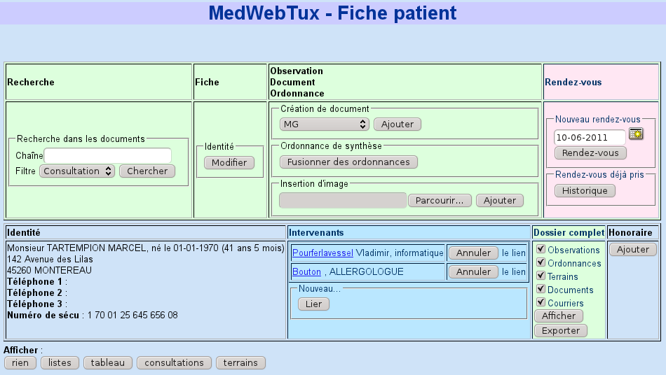
La fiche patient affiche les données permanentes du patient (adresse, date de naissance, téléphones, Mail, Notes, etc.).
Cette page permet aussi d'afficher des synthèses au moyen des boutons du bas : listes, tableau, consultations ou terrains.
La liste des contacts avec leur date sera affichée si vous cliquez sur le
bouton Afficher->listes.
Ces contacts sont triés en six colonnes : Consultations, Documents, Ordonnances, Courriers, Terrains et Honoraires.
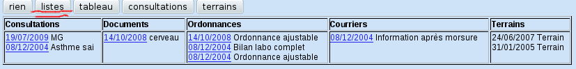
Un clic sur une date envoie à l'ensemble des informations concernant ce
patient à cette date (sauf le terrain).
Un clic sur l'adresse E-mail vous permet d'envoyer un mail à la personne (pour
peu que votre navigateur soit interfacé avec votre système de courrier).
Un clic sur le nom d'un intervenant envoie sur la fiche de l'intervenant.
Un clic sur Afficher->Tableau affiche la même chose sous forme d'un tableau ordonné par date
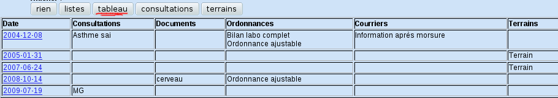
Un clic sur Afficher->Consultations affiche le contenu de l'ensemble des consultations de ce dossier (en fonction de vos droits).
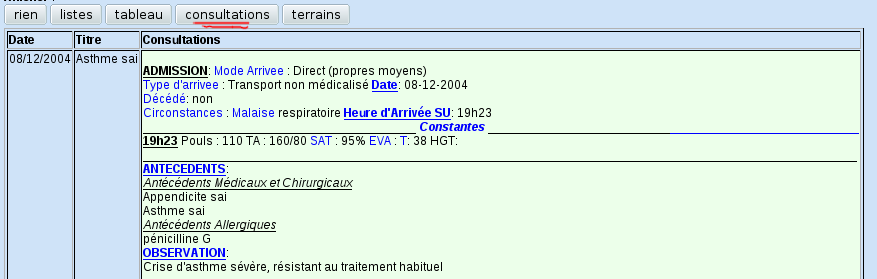
Un clic sur Afficher->Terrains affiche
le contenu de l'ensemble des terrains de ce dossier (en fonction de vos droits)
et donne l'accès à la modification du statut de grossesse ou d'allaitement,
ainsi qu'au remplissage des tableaux de suivi..
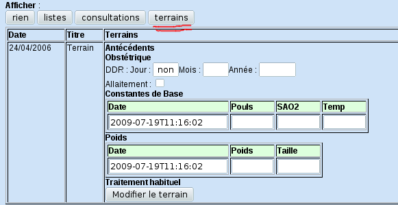
Pour valider une grossesse, il suffit d'écrire une date des dernières règles.
Pour l'allaitement, il faut cocher la case.
Pour les tableaux de suivi, il suffit de remplir les cases désirées.
Normalement, vous ne devriez pas toucher à l'horodatage. Si vous le faites, respectez impérativement le format fourni.
Pour valider les modifications, il faut cliquer en bas sur Modifier le terrain.
Notez que rien ne permet de modifier les antécédents ni le traitement de fond sans passer par MedinTux.
Un bouton accompagné de cases à cocher 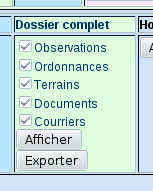permet aussi d'afficher le
dossier complet, ou simplement une catégorie de documents (observations,
ordonnances).
Il s'agit d'une simple feuille de texte, pouvant être enregistrée, ouverte
avec un programme de texte pour modifications, envoyée par mail, etc.
Un bouton permet d'obtenir une version imprimable, dépouillée des en-têtes
et contrôles.
Le bouton Exporter permet de générer un fichier nommé patientxxxxxxx.xml, situé dans le répertoire log/ de la racine de MedWebTux.
Un lien permet de l'enregistrer à l'endroit de votre choix pour importation ultérieure.
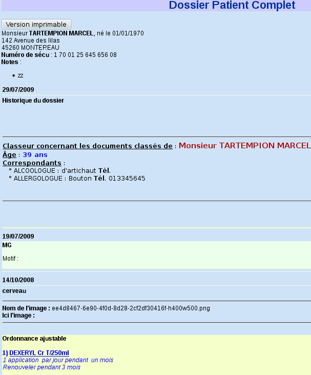
Le bouton Intervenant Lier donne accès
à un formulaire de recherche d'intervenant.
On peut choisir l'intervenant par nom ou spécialité. En laissant vide la zone
de saisie de nom et en laissant le déroulant de spécialité sur "Toutes", on
trouve tous les intervenants du fichier.
Le nom des intervenants peut être recherché par correspondance exacte (cocher
la case) ou par partie du nom.
Le plus souvent, il sera préférable de laisser la zone Nom vide et sélectionner simplement la
spécialité.
Un clic sur le bouton Chercher permet
d'afficher tous les intervenants correspondant à la requête.
Il suffit de cliquer sur le bouton Lier
pour lier le patient à l'intervenant.
Le lien pourra être cassé à plusieurs endroits, en particulier en cliquant
sur le bouton Annuler de la ligne du
correspondant (il y aura confirmation).
Recherche dans le dossier
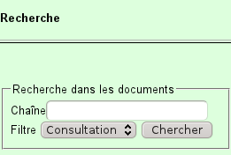
Vous pouvez chercher un mot ou une phrase dans le dossier d'un patient avec
la zone de saisie, en sélectionnant si vous voulez chercher dans les
consultations, les ordonnances ou les courriers
au moyen de la liste déroulante.
Seuls les documents contenant cette chaîne seront affichés dans la liste de
résultat.
La recherche ne tient pas compte de la casse (majuscules = minuscules).
Il est possible de consigner en journal tous les accès faits par un
utilisateur particulier (ou tous).
Pour cela, il faut modifier le fichier patient.php (explications dans le
fichier).
Cette fonction permet, par exemple, de donner accès aux données à un
confrère, tout en s'assurant, a posteriori, qu'il n'abusera pas de cet accès.
On peut créer tous documents afférents au patient,comme une nouvelle observation, un document, une ordonnance non structurée ou un courrier en cliquant sur "Observation Documents- Ajouter".
Notez que la maquette initiale du document doit être choisie dans le
déroulant proche du bouton Ajouter.
On arrive alors en mode Observation.
On peut aussi créer un document image en choisissant une image dans
l'ordinateur. Pratique pour les Smartphones, qui intègrent un appareil photo
et un navigateur raccordé à MedWebTux.
Enfin, on peut aussi donner un rendez-vous par le bouton de même nom. Pensez à choisir la date avant de cliquer sur le bouton, afin d'arriver directement sur l'agenda du jour.
À partir d'un clic sur une date du mode patient ou du mode activité ou de la validation d'un document, on atteint une page affichant toutes les informations de cette journée pour ce patient triées en colonnes (consultation, ordonnance, courrier), ainsi que la liste des dates où il existe d'autres documents. Un clic sur une de ces dates envoie sur les informations de cette journée.

Notez que cette page permet aussi d'accéder à modification de document ou à l'impression (affichage d'une page avec en-têtes et sans boutons de contrôle)
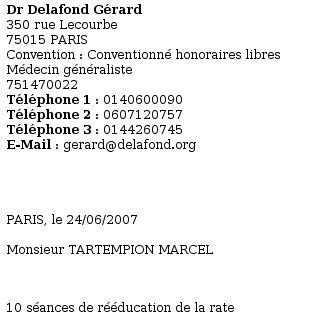:
Mode
observation (Écriture de documents)
Lancé par le bouton Observation -Document -> Ajouter de la fiche d'un patient ou Modifier d'une fiche de consultation, le mode observation permet de consigner des données médicales, pourvues d'un titre et d'un horodatage.
Ce mode permet de créer aussi bien des observations que des ordonnances,des
courriers ou des documents, sans toutefois bénéficier d'assistants, tels le
Vidal, qui n'est pas exploité.
Si vous ne disposez pas de javascript, l'interface a cet aspect :
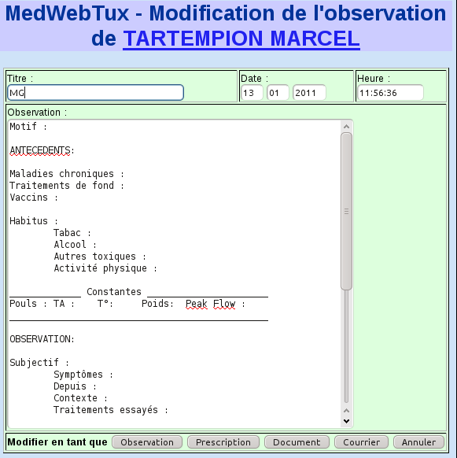
Le titre est libre. Il est rempli par défaut par la valeur choisie dans le
déroulant, elle-même issue du fichier templates.php (voir plus haut).
L'horodatage est proposé automatiquement avec la date et l'heure de l'instant,
mais peut être modifié, tant qu'on respecte la syntaxe.
Il est fourni des maquettes d'observation, de courriers, de prescriptions et de
documents par défaut, que vous pouvez changer dans le fichier
templates.php.
L'observation est écrite en texte simple.
Cependant, toute balise HTML introduite à la main sera interprétée à
l'affichage.
Si vous disposez de javascript, l'éditeur de documents a bien meilleure
allure, et il permet d'éditer les documents en texte riche, avec tableaux,
couleurs, choix de police, etc.

Une fois votre observation remplie, il suffit de cliquer sur le bouton Enregistrer en tant que ou Modifier en tant que selon les cas, et vous
retournez sur la date du jour, où le nouveau document devrait apparaître avec
sa mise en forme définitive. Notez que l'arrivée en mode observation pose un
verrou sur la fiche du patient, et que ce verrou est supprimé automatiquement
au moment de l'enregistrement.Si des verrous n'ont pas été retirés, par
exemple parce que vous n'avez pas enregistré l'observation, vous pourrez les
supprimer au moment de quitter le programme.
Remarquez que la fonction de modification permet aussi de changer le type d'un
document.
Attention ! Ne modifiez pas un document contenant une image : l'image serait perdue.
Pour l'instant, il n'y a pas de fonction de suppression. Patience...
Fusion d'ordonnances structurées
Si votre patient dispose d'ordonnances structurées produites par
MedinTux (il s'agit d'ordonnances établies avec l'assistant de prescriptions
de MedinTux à l'aide du Vidal ou de la base GET), vous pouvez rencontrer de
situations où il est utile de créer une nouvelle ordonnance composée de tout
ou partie de plusieurs ordonnances, fonction dont MedinTux est dépourvu au
moment où ces lignes sont écrites (version 2.14).
À partir de la fiche patient, cliquez sur le bouton Fusionner des ordonnances de la case Observation
Documents Ordonnances.
Vous obtenez alors une fenêtre de ce type :
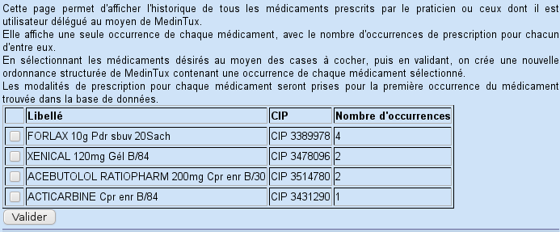
Chaque médicament prescrit au moins une fois par le praticien lui-même ou un
autre dont il hérite des droits sur les ordonnances apparaît une fois dans la
liste, accompagné du code CIP et du nombre de fois où il a été prescrit.
Notez que les libellés affichés ne sont pas ceux qui apparaissent sur
l'ordonnance, mais ceux pris dans le Vidal pour le code CIP enregistré.
Cette simple vue est très pratique pour avoir l'historique thérapeutique d'un
patient en un coup d'œil.
Il vous suffit alors de cocher les différentes case désirées, puis de
valider pour avoir immédiatement une ordonnance contenant tous les
médicaments choisis.
Notez que le texte qui sera affiché à l'écran est composé uniquement du
libellé Vidal, mais que la structure de prescription du produit est
intégralement conservée d'une manière invisible en XML.
Si vous demandez à modifier cette ordonnance dans MedinTux, vous verrez
apparaître une vraie ordonnance de MedinTux, avec posologie, durée, etc.
Petite limitation : nous avons vu que, lorsqu'un médicament (plus exactement
une présentation) a été prescrit plusieurs fois, il n'apparaît qu'une seule
fois dans la liste. Or, il est possible que ce médicament ait été prescrit
différemment aux différentes occasions (posologie, durée, etc.).
Dans ce cas, c'est la première occurrence trouvée dans la base de données
qui est utilisée sans possibilité de choisir.
Libre à vous de modifier ensuite l'ordonnance avec MedinTux.
Mode Intervenants
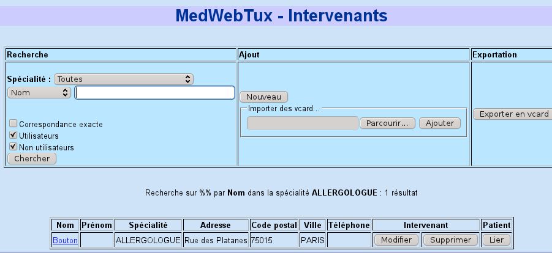
Sur cette page, on cherche les intervenants en fonction de n'importe quel
critère (nom, prénom, adresse), combiné à la spécialité.
Si l'on veut voir tous les intervenants d'une spécialité, il suffit de
choisir la spécialité dans la liste déroulante et ne pas cocher la case
Correspondance exacte.
Lorsque l'on cherche selon un critère (nom, adresse, etc.), il suffit de
renseigner une partie du critère dans la case. Pour n'avoir que les résultats
correspondant exactement à la recherche, il faut cocher la case Correspondance exacte. Si l'on veut tous les
intervenants correspondant à la zone de saisie sans distinction de la
spécialité, il faut laisser le déroulant sur Toutes.
Enfin, on peut restreindre la recherche aux intervenants qui sont ou ne sont
pas utilisateurs de MedinTux.
Un clic sur un nom envoie à la fiche détaillée de l'intervenant.
Pour imprimer le listing trouvé sans les contrôles et autres fioritures de la
page, il suffit de faire appel à la fonction d'impression du navigateur.
Le bouton Exporter en vcard n'apparaît
que si vous avez déjà effectué une recherche.
Il permet de générer un fichier des intervenants sélectionnés lors de la
recherche au format vcard, facile à intégrer dans n'importe quel logiciel de
carnet d'adresses, utilisé par les clients de courrier ou les téléphones
portables.
Création ou modification de fiche
d'intervenant
Il est aussi possible de créer un nouvel intervenant à partir de rien
grâce au bouton Nouveau, ou à partir
d'une fiche existante (bouton Modifier sur
la ligne d'un intervenant servant de modèle,
par exemple pour les praticiens d'un cabinet de groupe, afin de ne pas
réécrire l'adresse à chaque fois).
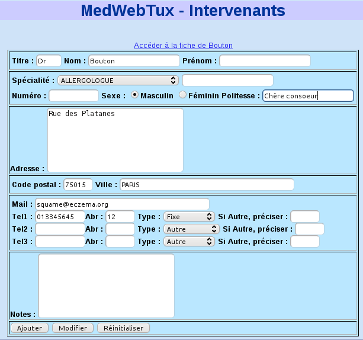
La gestion des spécialités est automatique : toute nouvelle spécialité
ajoutée dans la zone éditable sera ajoutée si la liste déroulante des
spécialités est positionnée sur Autre.
Sinon, c'est la spécialité
sélectionnée dans le déroulant qui sera prise.
Pour supprimer une spécialité de la liste, il faut la supprimer de toutes les
fiches d'intervenant où elle apparaît.
La gestion des types de téléphones obéit au même mécanisme : s'il n'existe
plus aucun téléphone de type "portable", le type "portable disparaît de
lui-même..
La saisie de la ville est automatisée en fonction du code postal et
réciproquement : écrivez simplement un code postal ou une ville, et une
fenêtre surgira pour vous proposer la ville ou le code postal (nécessite
Javascript activé dans le navigateur).
Les numéros de téléphone sont automatiquement nettoyés de leurs espaces à
l'enregistrement.
Si le ou les intervenants ont déjà une fiche vcard (exportation d'un carnet
d'adresses, par exemple), vous pouvez importer le tout en sélectionnant le
fichier à importer.
Cela évite de ressaisir votre carnet d'adresses en provenance d'un autre
logiciel de contacts.
Une utilisation pratique est de récupérer ainsi tout le carnet de contacts
d'un smartphone.
Il est aussi possible de supprimer un correspondant en cliquant sur le bouton
Supprimer de sa ligne.
Il sera demandé confirmation.
Pour lier un patient à un intervenant, il faut cliquer sur le bouton Lier de la ligne de l'intervenant, puis
rechercher le patient à lier dans le formulaire.
Fiche
d'intervenant, patients et consultations liées, utilisateur
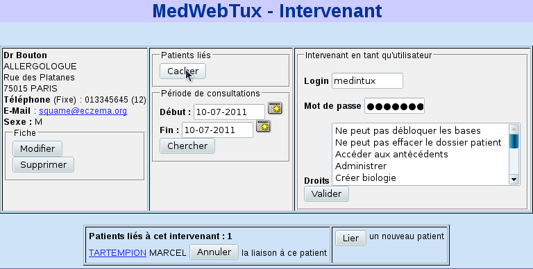
Ici se trouve la fiche de l'intervenant sélectionné. Notez que vous pouvez
arriver ici aussi bien depuis la liste des correspondants que depuis la fiche
d'un patient lié à cet intervenant.
Un clic sur l'adresse E-mail (si elle existe) vous permet d'envoyer un mail à
la personne.
Un clic sur Patient liés->Montrer
permet d'afficher tous les patients liés à ce correspondant. Un clic sur leur
nom envoie sur leur fiche.
Si vous donnez des dates dans les zones de saisie, en appuyant sur le bouton
Chercher, vous obtiendrez une liste
restreinte des patients : ceux qui sont liés à ce correspondant et qui ont eu
une
consultation durant la période choisie.
La liste est celle des dates où les consultations ont eu lieu (plusieurs dates
possibles pour un même patient). Un clic sur une date envoie sur la fiche de
journée de ce patient ce jour-là.
Le bouton Lier permet de lier un nouveau
patient à cet intervenant.
Il suffit de donner un nom de patient, de cliquer sur Chercher, et de cliquer sur le bouton Lier sur la ligne du patient choisi pour qu'il
soit lié.
Pour délier un patient, il faut cliquer sur le bouton Annuler de sa ligne dans la fiche de
l'intervenant.
Enfin, il est possible de supprimer la fiche de l'intervenant ou de la modifier
en cliquant sur les boutons correspondants.
La zone de gestion des utilisateurs n'apparaît que si vous êtes
administrateur ou utilisateur de même identité que la fiche affichée.
Si vous êtes utilisateur, vous pouvez seulement modifier votre mot de
passe.
Si vous êtes administrateur, vous pouvez en plus transformer un intervenant en
utilisateur en lui créant un login et un mot de passe, ainsi que les droits
directs afférents.
Vous pouvez modifier le mot de passe et les droits directs, mais pas le
login.
Les droits délégués ne sont pas gérés.
Mode
Activité
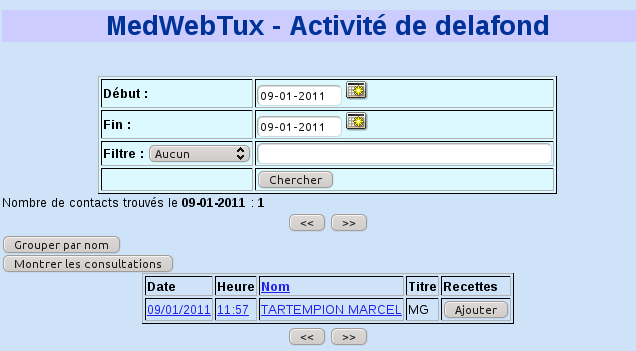
Dans ce mode, vous pouvez obtenir la liste des patients qui ont eu une
consultation pendant une période donnée pour le médecin qui est connecté
(ou pour un autre médecin ou même pour tous si
vous avez les droits administrateur), ainsi que le titre des consultations
trouvées.
Le tri se fait par date et heure, ce qui permet de reconstituer le planning des
consultations effectivement faites. En cliquant sur la tête de colonne, vous
forcez le tri par nom.
Vous pouvez confronter cette liste à l'agenda du jour en cliquant sur la date
d'une consultation.
Un clic sur le nom envoie au dossier du patient, tandis qu'un clic sur l'heure
envoie à la consultation du jour.
La valeur par défaut de la recherche est la date du jour.
La saisie des dates obéit aux mêmes règles que l'agenda.
Si vous donnez une date de fin antérieure à la date de début, la date de fin
est automatiquement changée pour être identique à la date du début.
Les résultats de recherche sont accompagnés de deux boutons << et>>.
Un clic sur la double flèche vers la gauche envoie à la journée précédant
la première journée recherchée, et un clic sur le bouton droit envoie sur la
première journée suivant la dernière journée
recherchée.
Par défaut, le programme recherche toutes les consultations de la période en
question. Il est possible de restreindre la recherche en choisissant autre
chose que "Aucun" dans le déroulant.
Il est inutile d'ajouter des caractères joker (%), sauf pour chercher de
multiples clés dans la même fiche. Exemple : donner "fièvre%toux" pour trouver les fiches qui
contiennent à la fois "fièvre" et
"toux" dans cet ordre.
Dans le cas de la recherche dans les notes, elle se fait parmi les dossiers qui
ont donné lieu à au moins un acte pendant la période étudiée. Même s'il y
a eu plusieurs contacts, le résultat n'est
affiché qu'une fois.
Lesflèches de jour suivant et précédent utilisent le même critère de
recherche.
Le contenu de la zone de saisie n'a aucun effet si le menu déroulant est
positionné sur "Aucun" lorsqu'on actionne le bouton Chercher.
Si un même patient a eu plusieurs contacts durant la période et qu'on ne veut
l'afficher qu'une fois (recherche de tous les patients différents vus durant
la période étudiée), il faut utiliser le bouton Grouper par nom.
Si l'on désire afficher le texte des consultations, il faut actionner le
bouton Montrer les
consultations.
L'affichage de l'activité fait aussi une liaison avec la comptabilité.
La colonne de droite montre les honoraires du patient ou un bouton Ajouter si aucun honoraire
n'est enregistré ce jour.
Si vous voulez imprimer l'activité, seules les données utiles seront
imprimées (pas les contrôles et zones de recherche).
Mode Vidal
Ce mode nécessite que le Vidal Data Semp soit installé (licence
commerciale).
Il donne accès à la classification des médicaments et à la fiche de chaque
médicament.
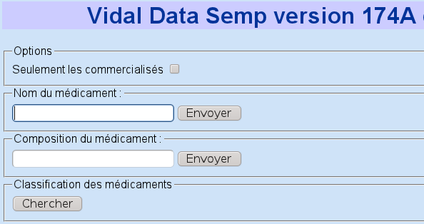
Il est conseillé de toujours cocher la case Seulement les commercialisés, car les fiches des médicaments non disponibles sont incomplètes, et les recherches sont polluées par des médicaments inutiles.
Pour faire une recherche par nom ou par DCI, il suffit de donner une partie du mot à chercher dans la zone de saisie, puis de cliquer sur Envoyer. Évitez de laisser la case vide (recherche sur tout le fichier) ou de valider par la touche Entrée en cas de recherche par DCI.
Exemple de recherche par nom :

Cliquez simplement sur un des liens donnés pour accéder à la fiche complète :

Notez que certains liens sont fournis : un lien qui pointe vers la page des interactions et une liste de liens qui pointent vers les différentes rubriques de la fiche.
La recherche par composition est semblable :

En cliquant sur un lien, on trouve toutes les spécialités contenant cette substance :

Il suffit alors de cliquer sur le nom de la spécialité désirée.
Il est aussi possible de naviguer dans les classes thérapeutiques, en cliquant sur le bouton Chercher de la classification des médicaments, puis en développant tous les liens fournis :

Un clic sur le nom de la spécialité ouvre la fiche du médicament. Notez que les médicaments proposés tiennent compte de la case Commercialisés seulement.
Notez également que la fiche d'un médicament propose des liens pour accéder à n'importe quel niveau de l'arborescence à laquelle il appartient :

Il y a plusieurs manières de vérifier des interactions basées sur les informations du Vidal Data Semp.
Pour lancer le module sans argument, cliquez dans le menu cascadé Vidal->Interactions.

La fenêtre d'accueil est très simple : une zone de saisie et un bouton de validation. Écrivez tout ou partie du nom commercial d'un médicament, et une liste sera proposée après validation :

Seules les spécialités actuellement commercialisées seront affichées.
Choisissez une des spécialités trouvées en cliquant sur son nom : elle deviendra alors sélectionnée pour les interactions :

Le nom du médicament validé apparaît en lien HTML : vous pouvez cliquer dessus pour atteindre la fiche complète du médicament.
À ce moment, toutes les interactions connues pour ce médicament seront affichées.

Recommencez autant de fois que nécessaire pour ajouter d'autres médicaments. À partir du deuxième, les interactions sont calculées entre tous les médicaments présents dans la liste de sélection :

Pour lancer une nouvelle recherche vierge, il suffit de lancer à nouveau le sous-menu Vidal ->Interactions.
Pour supprimer juste certains médicaments, il faut décocher leur case, puis cliquer sur le bouton Valider, en pensant à écrire quelque chose dans la zone de saisie (la saisie vide est interdite, car elle lancerait un affichage du Vidal complet, ce qui est long et inutile).
D'autres manières de lancer le module d'interactions :
Mode CCAM
Ce mode permet d'accéder à la Classification Commune des Actes Médicaux française en lecture seule et sans liaison au dossier.
Il existe plusieurs modes de recherche

Le système gère aussi les modificateurs, les associabilités et les incompatibilités.
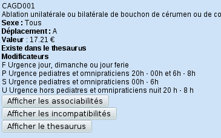
Une fois la fiche d'un acte trouvée, vous pouvez, en cliquant sur les boutons adaptés, l'ajouter au thesaurus, afficher ses modificateurs, afficher ses actes associés et ses actes incompatibles.
Mode
Comptabilité
Ce mode nécessite que la comptabilité de MedinTux soit installée.
Actuellement ce mode ne gère que les recettes.
On y accède soit depuis la fiche d'un patient, soit depuis une observation
validée, soit depuis l'activité (consultation sans paiement lié).
Il permet la saisie d'un nouvel honoraire, la suppression d'un honoraire.
Un tableau récapitulatif des honoraires du jour est fourni en bas de la page.
La page de saisie des honoraires donne accès à une page de synthèse des honoraires, permettant la validation des honoraires, la création de bordereaux bancaires de remise de chèques
Mode
Sauvegarde
Ce mode est particulièrement simple, puisqu'il vous permet, d'un simple
clic, de télécharger une copie de vos données (patients, consultations,
rendez-vous) sur un disque local de votre
choix (disque dur, disquette USB, etc.).
De plus, les différents liens proposés permettent de sauvegarder d'autres données personnelles, comme le Thesaurus CCAM, les données médicamenteuses personnelles ou la comptabilité.

Note : sous Windows, il faut ajouter le chemin (PATH) de
mysqldump.exeau PATH de Windows.
Il faut avoir les droits d'administrateur adm de MedinTux pour pouvoir réaliser cette opération.
Installation
Cette fonction nécessite que vous ayez un répertoire nommé "log" dans la racine de MedWebTux, et accessible à l'utilisateur apache en écriture.
Réinstallation de la sauvegarde :
 Licence
Licence
Ce programme est distribué sous licence GNU GPL.